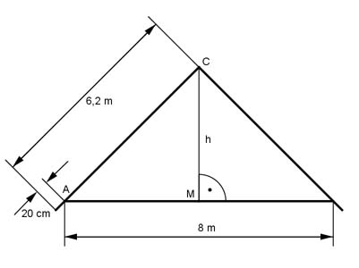

Pythagoras Aufgabe 58 Ein Satteldach ist 8 m breit und hat 6,20 m lange Sparren, die an der Dachtraufe 20 cm überstehen. Wie hoch ist das Dach in m?  In einem gleichschenkligen Dreieck halbiert die Höhe die Grundseite und steht auf ihr senkrecht. Satz von Pythagoras im Dreieck AMC: AM = 8 m/2 = 4 m AC = 6,2 m – 0,2 m = 6 m AC² = AM² + h² |-AM² h² = AC² - AM² h² = 6² - 4² = 20 m² |√ h = 4,5 m